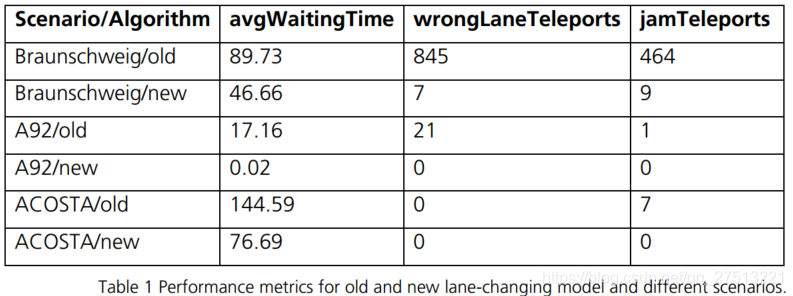

论文笔记：Lane-changing model
主要介绍SUMO的一篇换道模型论文：Lane-changing model in SUMO
Abstract：SUMO is an open source microscopic traffic simulation. A major component of modelling microscopic vehicle behavior is the lane-changing behavior on multi-lane roads. We describe a new model which uses a 4-layered hierarchy of motivations to determine the vehicle behavior during every simulation step and motivate in which ways it improves the current lane-changing model.
论文地址
1. Introduction
主要介绍了SUMO中的几个运动模型：
- Car-following model: determines the speed of a vehicle in relation to the vehicle ahead of it.
- Intersection model: determines the behavior of vehicles at different types of intersections in regard to right-of-way rules, gap acceptance and avoiding junction blockage.
- Lane-changing model: determines lane choice on multi-lane roads and speed adjustments related to lane changing.
该模型仍然是与之前的老式模型进行对比，老式模型在不同交通场景中不断改善，使得单独进行分析变得困难。新的模型主要考虑了两个方面：
- 变道的决定（the change decision of a vehicle）
- 变道的速度（changes in the velocity for the vehicle itself）
在该部分，作者强调了本文的创新点：该模型明确区分了四种不同的车道变换动机
2. Architecture
重点介绍了变道过程中的技术细节
车辆速度主要取决于前车的速度或者倾向的继承车辆的速度
The speed of a vehicle is mainly determined by the next vehicle in front of it called the leader, which may be on the same lane or on the preferred successor lane after the current lane
在这要根据跟车模型来进行计算，文中没有提到。引用文献：Metastable states in a microscopic model of traffic flow
文章的重点也在这部分提到，即汽车变道规划的四个子步骤：
- 计算优选后继车道；
- 在保持当前车道的假设下，计算安全速度，并整合来自先前模拟步骤的车道变换相关速度请求；
- 车道变换模型计算变更请求（左，右，停留）；
- 执行换道操作或计算下一个模拟步骤的速度请求（包括提前计划多个步骤）。是否请求速度变化取决于变道请求的紧急程度；
原文：
- Computation of preferred successor lanes (called bestLanes)
- Computation of safe velocities under the assumption of staying on the current lane and integration with lane-changing related speed requests from the previous simulation step
- Lane-changing model computes change request (left, right, stay)
- Either execute lane-changing maneuver or compute speed request for the next simulation step (involves planning ahead for multiple steps). Whether speed changes are requested depends on the urgency of the lane-changing request
其中3,4由SUMO中laneChangingModel组件控制处理，并且可以被替换。
1.4 Strategic lane changing
汽车变道进入下一条边的行为，叫做汽车本身的变道策略。汽车必须在达到道路终点前进行变道规划
1.4.1 Evaluating subsequent lanes
评估子线路的标准
- bestLanes（不需要换道）
- occupation（沿着最优道路的车辆密度）
- bestLaneOffset（车道偏移量）
1.4.2 Determining Urgency
定义几个参量来评估换道行为的紧急程度,同时进一步说明了它的整个行为。
A strategic change is deemed urgent if the following relation holds true
1.4.3 Speed adjustment to support lane-changing
主要探究vechicle 与blocking vehicle的关系，并根据两者之间的关系来相应地改变行为
每当由于阻挡车辆而不能执行期望的车道变换时，车辆可以调整其速度以允许车道变换在后续步骤中成功。 此外，车辆可能对阻挡车辆的速度产生影响（实际上，这通常作为对观察自我车辆的转向信号的反应而发生）。
1.4.4 Preventing deadlock
两车由于一些原因，同时到达道路的终点，此时两车都希望可以实现换道，这种情况便发生了死锁（deadlock）。
if two vehicles on adjacent lanes both need to change to the lane occupied
by the other vehicle (counterLaneChange) and both vehicles reach the end of a dead lane, a deadlock occurs
为了避免这种情况，对车进行分类（更靠近道路终点的称为blocking leader，另一个称为the blocking follower)。后者要预先进行减速，以为前车留出足够的距离进行变道操作。
the blocking follower slows down when approaching the dead-end to ensure that the blocking leader has enoughspace to complete its lane change
尽管采取这种操作，死锁仍然可能无法避免，因为会存在多车道的情况。因此，采用的方法是预留出20~40m范围进行变道。
additional space of 20m is reserved for vehicles which need to change to the right across and 40m for vehicles which need to change to the left.
1.5 Cooperative lane-changing
在某些场景下，有些车辆执行变道行为仅仅为了帮助其他车辆执行变道。
太难了，完全不懂。。。
1.6 Tactical lane-changing（策略变道）
Tactical lane-changing refers to maneuvers where a vehicle attempts to avoid following a slow leader （简单明了的解释）
如果不这样做会导致速度差异较小的车辆成为交通流量的主要障碍。
变量：speedGainProbability
描述：Each vehicle maintains a signed variable speedGainProbability which by its sign indicates the beneficial change direction and by its magnitude the expected benefit
配置参数：--lanechange.overtake-right
1.7 Obligation to clear the overtaking
注意该部分的描述是Obligation，所以在这其实现基本上是强制性的。目的与之前1.5描述类似，为了其它车辆更快行驶。在这位置作者的描述是Mandated by traffic laws。
变量：keepRightProbability
公式：
1.8 Remote controlled lane changing(TraCI)
远程请求改变到目标通道或保持当前通道必须与由通道改变模型计算的“固有”请求集成。 这是通过让用户通过设置适当的标志（新）来确定远程请求的紧急程度和优先级来实现的。
1.9 A hierarchy of lane changing
以上四个动机进行分层描述。
- Urgent strategic change to d needed: change
- Change to d would create an urgent situation: stay
- Vehicle is a blocking follower for another vehicle with urgent strategic change
request: change - speedGainProbability above threshold and its sign matches d: change
- non-urgent strategic change to d needed: change (new)
1.10 Improvements over earlier Model
选取几个参量作为标准，与之前的模型进行对比
- avgWaitingTime: the average time each vehicle spent with speed below 0.1m/s
- wrongLaneTeleports: the count of vehicles which had to be moved artificially (teleported) because they could not complete a strategic lane change (after a threshold time t)
- jamTeleports: the count of vehicles which had to be moved artificially (teleported) because the successor lane was occupied (after a threshold time t)
改变换道模型，然后对比不同的交通场景进行性能测试

最后列举了新模型的一些提升
- 在多道迂回中采用特殊行为确保所有车道都被使用，而先前的模型只使用外侧的车道